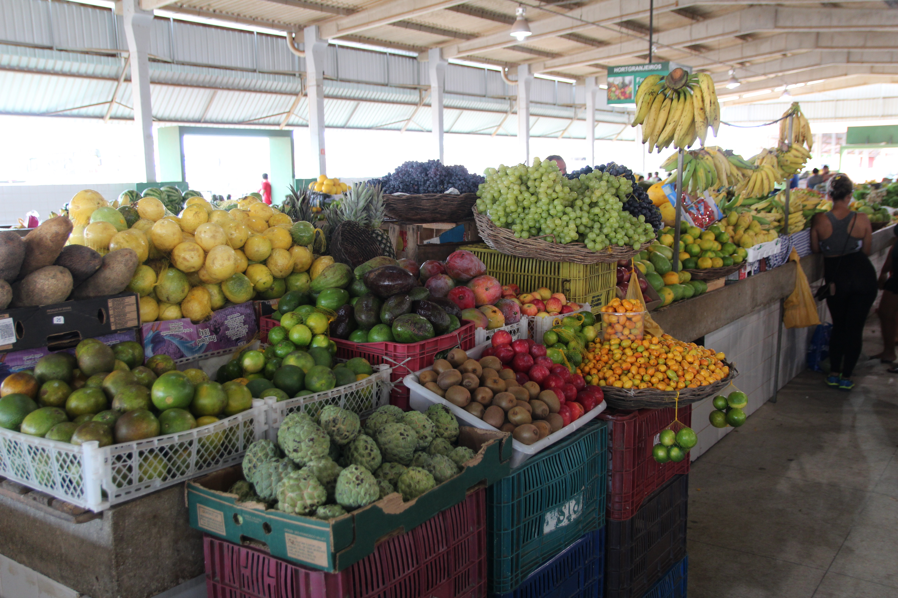

A feira reúne o que há de melhor na produção dos cooperados. Os produtos se dividem em três grandes grupos:
Preços práticados na última feira (podem variar conforme a safra):
| Produto | Unidade | Preço R$ |
|---|---|---|
| Alface | Maço | 3,00 |
| Ovos caipiras | Dúzia | 12,00 |
| Mel | Pote 500g | 25,00 |
| Queijo coalho | kg | 40,00 |
Para manter a organização e a qualidade, todo feirante deve seguir os passos abaixo, nesta ordem:
A feira é a vitrine do nosso trabalho. Capricho na barraca é respeito com quem compra.
Para se tornar um feirante ou tirar dúvidas, procure a administração da cooperativa ou acesse o site oficial:
www.cooperativapindorama.com.brFeira da Cooperativa Pindorama - Colônia Pindoramaa, Coruripe, Alagoas.
Voltar ao topo Clique aqui para reotrnar a pagina inicial